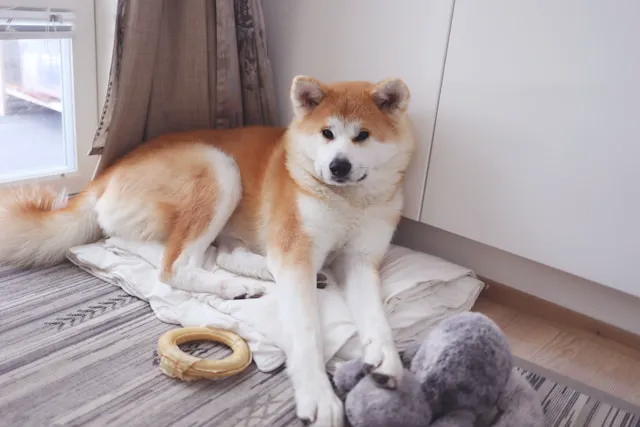

¿Qué es la ansiedad por separación y por qué aumenta en marzo?
La ansiedad por separación es un estado de angustia que experimentan algunos perros cuando se quedan solos o perciben que su cuidador se irá pronto. No se trata de “mala conducta” ni de rebeldía, sino de una respuesta emocional intensa ante la ausencia de su figura de apego. Durante el verano, muchas familias pasan más tiempo en casa, alteran horarios y comparten más actividades con sus mascotas. Cuando en marzo la rutina cambia bruscamente —vuelta al trabajo, colegio, jornadas más largas fuera del hogar— algunos perros no logran adaptarse y comienzan a manifestar signos de estrés incluso minutos antes de que su tutor salga. Este problema puede afectar a perros de cualquier edad y raza, y en algunos casos está relacionado con hiperapego, falta de entrenamiento en independencia, cambios recientes (mudanzas, nuevos integrantes en la familia) o experiencias previas de abandono.
"La clave no está en castigar un comportamiento, sino en comprender la emoción que lo provoca."
Síntomas: cómo diferenciar ansiedad de aburrimiento
Los signos más frecuentes incluyen ladridos o aullidos excesivos, destrucción de puertas o muebles, intentos de escape, micción o defecación dentro de casa, jadeo intenso, paseos nerviosos e incluso autolesiones. Es importante diferenciar la ansiedad real del simple aburrimiento. Un perro joven puede morder objetos por juego o falta de estimulación. En cambio, en la ansiedad por separación el comportamiento suele comenzar poco después de que el tutor sale, y va acompañado de un alto nivel de activación emocional. Una herramienta útil es grabar al perro cuando queda solo. Si los signos de angustia son continuos y aparecen inmediatamente tras la partida, es probable que exista ansiedad.

Cómo prevenir y tratar la ansiedad por separación
La prevención ideal comienza desde cachorro, enseñando al perro a tolerar periodos breves de soledad que se aumentan gradualmente. Sin embargo, también es posible trabajar la independencia en perros adultos. Algunas recomendaciones prácticas:
- Evitar despedidas largas o rituales exagerados antes de salir.
- No saludar de forma efusiva al volver; esperar a que el perro esté tranquilo.
- Realizar salidas progresivas para que aprenda que siempre regresamos.
- Asociar estímulos como llaves o chaquetas con momentos neutros dentro de casa.
- Proporcionar ejercicio físico previo a la salida.
- Dejar juguetes interactivos o de enriquecimiento ambiental.
- Crear un espacio seguro donde pueda relajarse.
En casos moderados o severos, puede ser necesario consultar a un médico veterinario o etólogo, quien evaluará si se requiere modificación conductual estructurada, uso de feromonas o tratamiento farmacológico.
Conclusiones
- La ansiedad por separación no es desobediencia, es angustia emocional.
- Marzo y los cambios de rutina pueden desencadenarla o intensificarla.
- La prevención y el trabajo gradual son fundamentales; el castigo solo empeora el problema.
¿Encuentras útil el artículo?
Compártelo con alguien más